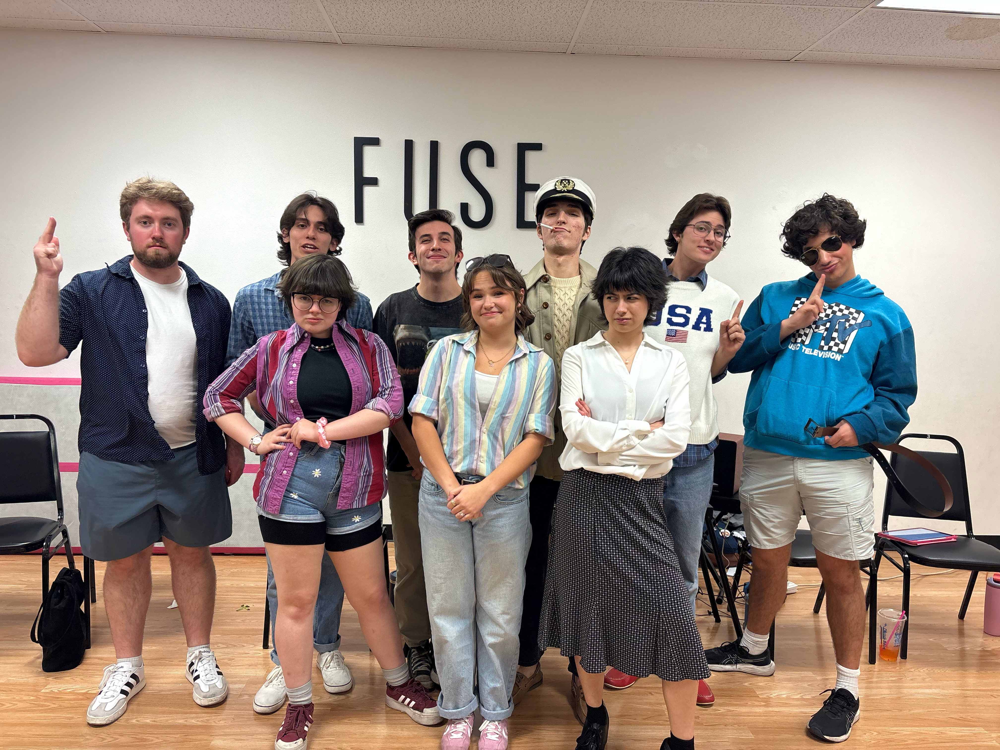
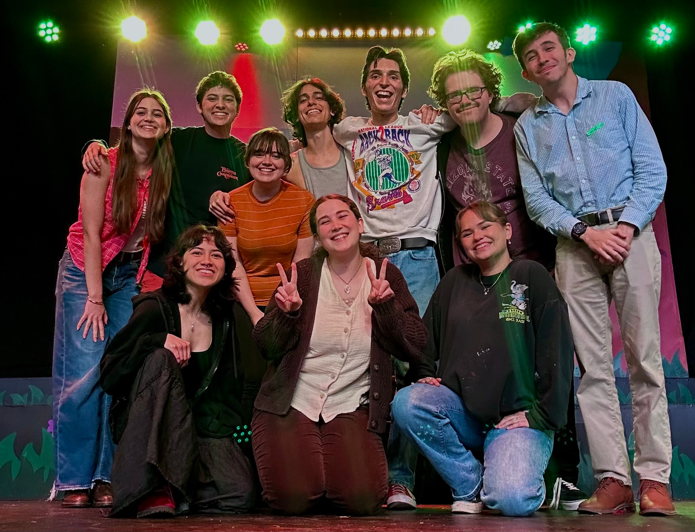
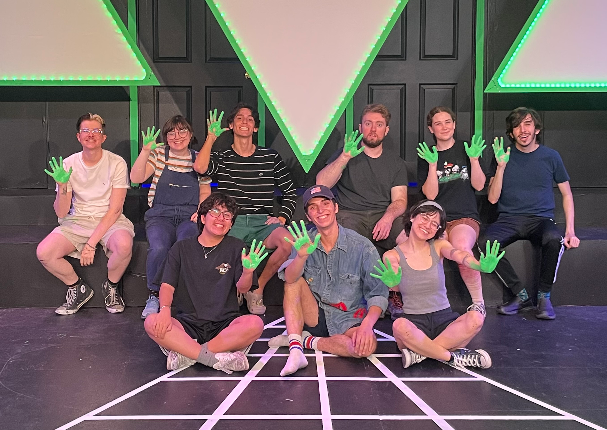

Upcoming

This time has come! Follow link below for the Firebringer audition form!
Audition FormFounder and Mission
Here at WoodWorks Productions, our mission is to create and perform all forms of entertainment. While our primary focus is musical theater, we also strive to explore plays, film, and other creative mediums.

We are actively writing and producing original works of all kinds, and we hope to grow into a creative home where aspiring artists can bring their ideas to life—using WoodWorks as a vessel to share their original stories with the world.

At the heart of it all, we are a tight-knit family. We build off one another’s creativity, passion, and support to bring fresh, meaningful, and lasting entertainment to our community. Our family is always growing, and there’s always room for more.

Whether you join us for a show, an audition, or a collaboration, we welcome you.
- Founder & President Jackson Wood